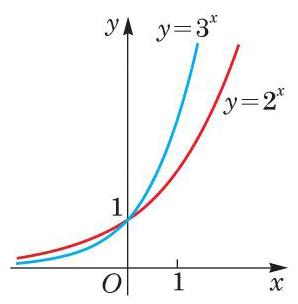

例题 1
例 1 若指数函数 的图像经过点 ,求该指数函数的表达式.
教师整合版 / 沪教版高中数学
必修第一册
第4章幂函数、指数函数与对数函数 · 保留教材主线与原题
教材与正式教参整合
研究这样一个问题: 一张纸对折一次, 由 1 层变为 2 层, 再对折一次,由 2 层变为 4 层, ,对折 次后,层数 与对折次数 的函数关系为 .
将幂的底数 固定,指数用变量 代替,研究幂 随 变化而变化的规律, 即用
来描述 与 之间的关系,就得到指数函数.
这里首先要假设 ,以保证对所有的实数 都有意义. 还要假设 ,因为如果 就恒等于 1,这种极为特殊的情况不必专门研究.
定义 当底数 固定,且 时,等式
因为对所有实数 都是有意义的,所以指数函数的定义域是全体实数.
在平面直角坐标系中,满足 的一切点 构成指数函数 的图像.
例 1 若指数函数 的图像经过点 ,求该指数函数的表达式.
例 2 分别作出指数函数 及 的大致图像.
解 先在相应的图像上取一些特殊的点.
由 ,可知指数函数 的图像必经过下面的点:
规定指数函数底 且 .
再使用计算器多采集一些点, 可以粗略地作出其图像.

图 4-2-1
由 ,可知指数函数 的图像必经过下面的点:
再使用计算器多采集一些点, 可以粗略地作出其图像.
我们把这两个图像放在同一个平面直角坐标系中以便观察比较, 如图4-2-1所示.
例 3 作出指数函数 的大致图像.

图 4-2-2
(1) ； (2) ； (3) ；
(4) ； (5) ; (6) .
(1) ； (2) .
(1) ； (2) .
由前述两种指数函数的图像可见,它们的图像均在 轴的上方. 这是因为当 时,对一切实数 均大于 0 . 因此,我们有如下的性质:
指数函数 的函数值恒大于 0 .
因为 ,所以指数函数 的图像均经过点 . 因此，我们有如下的性质:
指数函数 的图像都经过定点 .
由例 2 和例 3 可见,指数函数 的图像可分为两种情况.
(1) 的情况. 此时指数函数 的图像类似图4-2-1 中 的图像,当 时,函数值大于 1,其图像在直线 的上方; 而当 时,函数值小于 1 且大于 0,其图像在直线 的下方,且位于 轴的上方.
(2) 的情况. 此时指数函数 的图像类似图 4-2-2中 的图像,当 时,函数值小于 1 且大于 0, 其图像在直线 的下方,且位于 轴的上方; 而当 时, 函数值大于 1,其图像在直线 的上方.

图 4-2-3
这两种情况在同一平面直角坐标系中的图像如图 4-2-3 所示. 易见这两个指数函数 与 的图像关于 轴对称.
一般地说, 由指数幂的运算性质
容易看到: 若 为指数函数 图像上的一点,则 必为指数函数 图像上的点,反之亦然. 由于 及 两点关于 轴对称,因此指数函数 及 的图像必关于 轴对称.
指数函数 的图像与指数函数 的图像关于 轴对称.
观察图 4-2-1 中两个指数函数的图像, 它们的底都大于 1, 图像由左至右是上升的,也就是说,随着自变量 的不断增大, 函数值 也不断增大,这点也可以证明如下:
当 时,若 ,则 ,由幂的基本不等式有
即 . 此时,称指数函数 在 上是严格增函数,即函数值 随着 的 (严格) 增大而 (严格) 增大.
同理可证: 当 时,指数函数 在 上是严格减函数.
因此,我们有
指数函数的单调性 当 时,指数函数 在 上是严格增函数; 当 时,指数函数 在 上是严格减函数.
指数函数的图像与性质可总结见下表 4-1:
表 4-1
| 图像 | <img src="https://cdn.noedgeai.com/bo_d4slocn7aajc73fspklg_10.jpg?x=319&y=424&w=364&h=257&r=0"/> | <img src="https://cdn.noedgeai.com/bo_d4slocn7aajc73fspklg_10.jpg?x=733&y=425&w=350&h=257&r=0"/> |
| 图像特征 | (1)图像都在 轴上方，无限趋近于 轴，但永不相交. | |
| (2)过点 . | ||
| (3)由左至右图像上升. | (3)由左至右图像下降. | |
| 函数性质 | (1)定义域为 ，函数值恒正. | |
| (2)当 时， . | ||
| (3)在 上是严格增函数. | (3)在 上是严格减函数. | |
例 4 利用指数函数的性质, 比较下列各题中两个数的大小:
(1) 与 ；
(2) 与 ；
(3) 与 .
解(1)由于底数 大于 1 的指数函数 在 上是严格增函数,因此 .
(2)由于 ，且底数 小于 1 大于 0 的指数函数 在 上是严格减函数,因此
(3)当 时，指数函数 在 上是严格减函数， 故 ;
当 时,指数函数 在 上是严格增函数,故 .
例 5 求下列不等式的解集:
(1) ；
(2) .
解 (1) 将 写成 ,因为指数函数 在 上是严格增函数,所以 . 故原不等式的解集为 .
(2)当 时，指数函数 在 上是严格减函数， 因此有 ,整理得 ,解得 . 故原不等式的解集为 .
(1) 与 ；
(2) 与 ；
(3) 与 .
1.(1)考虑指数函数 . 因为底大于 1 的指数函数 在 上是严格增函数,所以 .
(2)考虑指数函数 . 因为底小于 1 大于 0 的指数函数 在 上是严格减函数,所以 .
(3)因为 ,当 时,指数函数 在 上是严格减函数, 所以 ,即 ; 当 时,指数函数 在 上是严格增函数,所以 ,即 .
(1) ； (2) .
3.(1)因为指数函数 在 上是严格增函数,所以 . 故此不等式的解集为 .
(2)将 写成 写成 . 因为指数函数 在 上是严格增函数,所以 ,即 . 故此不等式的解集为 .
例 6 已知指数函数 在区间 上的最大值比最小值大 ,求实数 的值.
解 当 时,指数函数 在区间 上是严格增函数. 所以,在区间 上,当 时,该指数函数取到最大值 ; 当 时,该指数函数取到最小值 . 由题意,得 , 解得 .
指数函数在生产实际和科学研究中有很多应用. 银行存款和贷款、GDP 的增长、人口增长等都可能涉及指数函数. 我们用以下的例子来体会"指数增长".
例 7 统计资料显示: 某外来入侵物种现有种群数量为 ,若有理想的外部环境条件,该物种的年平均增长率约为 20%. 试建立该物种的种群数量增长模型, 并预测 30 年后该物种的种群数量约为现有种群数量的多少倍. (结果精确到个位)
解 设经过 1 年后, 该种群数量为
经过 2 年后, 该种群数量为
当 时,不仅 随着 的增长而增长,且因为 ,随着 的增长, 增长得越来越快. 这就是所谓的"指数增长".
......
以此类推,经过 ( 为正整数) 年后,该种群数量为 .
当 时,该种群数量为 .
因此, 若不加控制, 该种群的数量在 30 年之后约为现在的 237 倍, 从而可能极大地破坏当地生态系统的稳定, 这说明指数函数可以用于预测种群数量, 便于及早进行干预.
| 第 天 | 甲服装的售价/元 | 乙服装的售价/元 |
| 1 | 166.25 | 186 |
| 2 | 157.93 | 172.98 |
| 3 | 150.04 | 160.87 |
| 4 | 142.53 | 149.61 |
| 5 | 135.41 | 139.13 |
(续表)
| 第 天 | 甲服装的售价/元 | 乙服装的售价/元 |
| 6 | 128.64 | 129.39 |
| 7 | 122.2 | 120.34 |
| 8 | 116.09 | 111.91 |
| 9 | 110.29 | 104.08 |
| 10 | 104.77 | 96.796 |
可以看出, 7 天后甲服装的售价将高于乙服装的售价.
① ； ② ； ③ ； ④ ； ⑤ .
(1) ； (2) .
(1) ; (2) ； (3) .
(1)1. 和 ；
(2) 和 .
(1) ；
(2) .
7.(1)因为指数函数 在 上是严格增函数,所以 ,解得 . 故此不等式的解集为 .
(2)将 写成 . 因为指数函数 在 上是严格减函数,所以 4,即 . 故此不等式的解集为 .
当 时,指数函数 在区间 上是严格增函数. 所以,当 时, 该指数函数取到最大值 ; 而当 时,该指数函数取到最小值 . 由题意,得 ,解得 .
因此 .

(第 1 题)
① 这个指数函数的底数是 2 ;
② 第 5 个月时，浮萍的面积就会超过 30 ；
③ 浮萍面积从 到 需要经过 1.5 个月；
④ 浮萍每个月增加的面积都相等.
其中, 正确结论的序号是 ( )
A. ①②③； B. ①②③④；
C. ②③④; D. ①②.

(第 2 题)